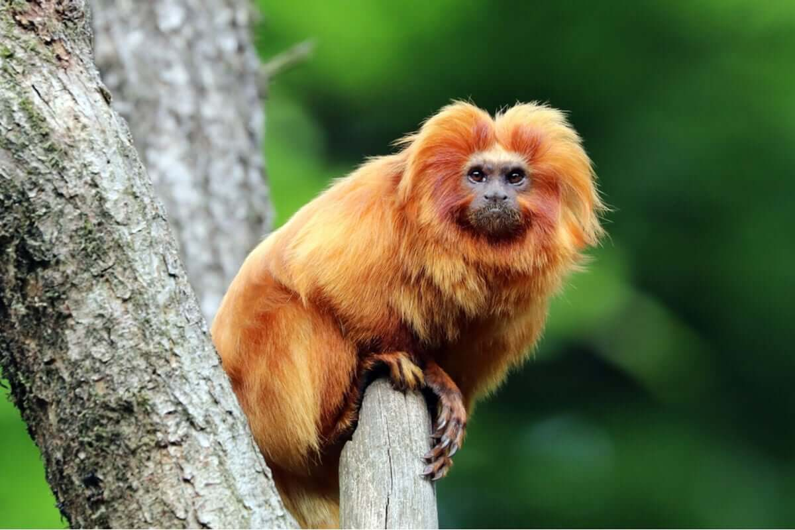

O mico-leão-dourado habita a Mata Atlântica e sofreu durante décadas com o desmatamento e o tráfico de animais, o que resultou na eliminação quase total da espécie.
Hoje, os poucos indivíduos que existem são restritos aos remanescentes de florestas do estado do Rio de Janeiro.
Com o apoio de projetos nas unidades de conservação onde se encontram, a situação tende a melhorar. Porém, a espécie está ainda classificada em perigo de extinção, de acordo com o Livro Vermelho do ICMBio (2016).

Onça-Pintada
A onça-pintada (Panthera onca) é considerada o maior felino das Américas, podendo ser encontrada em quase todos os biomas brasileiros, com exceção do Pampa, onde já foi extinta.
Esta espécie de onça é caçada por fazendeiros para proteger seus rebanhos, além disso, sofre com a destruição do seu habitat e sua pele tem grande valor no mercado mundial.
De acordo com o Livro Vermelho do ICMBio (2016), a onça-pintada é classificada em risco vulnerável de extinção.As principais causas são a caça ilegal e o aumento do desmatamento e queimadas. Trata-se de um animal predador (que está no topo da cadeia alimentar), carnívoro e vertebrado (possui vértebras). Pertence à ordem carnívora e à família felidae.